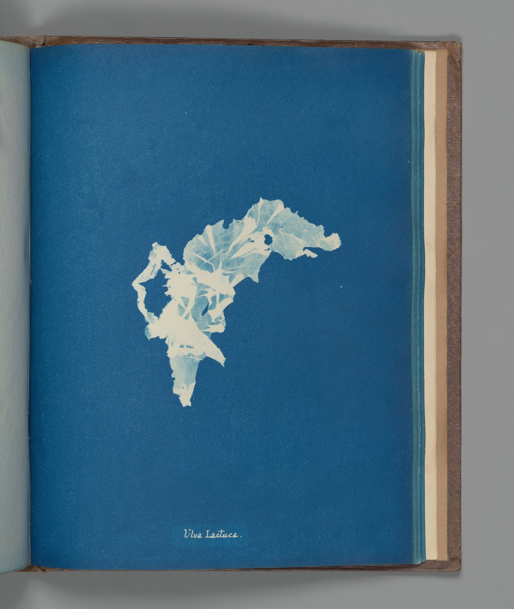

The Metropolitan Museum of Art. Gilman Collection, Purchase, The Horace W. Goldsmith Foundation Gift, through Joyce and Robert Menschel, 2005. 2005.100.557 (142).
Museum record · Public Domain / Met Open Access image
Anna Atkins
Ulva lactuca
ca. 1853 · Cyanotype
From Photographs of British Algae: Cyanotype Impressions.
The supplied photograph includes the page and book edges. They are retained here.
Source and viewing copies
Smaller full-frame viewing copies are shown; the unchanged museum files remain linked from the images. No crop, retouch or generated view. Museum-master status is unknown.